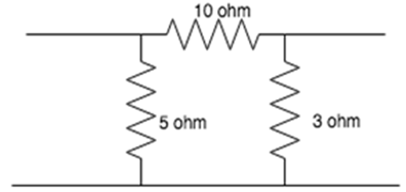
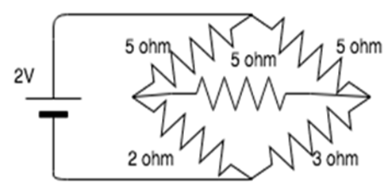

Answer:
i) Possible causes: Core saturation due to overvoltage/frequency, poor cooling, winding short, excessive load.
ii) Electrical: Inadequate insulation increases losses.
iii) Magnetic: Core saturation, excessive eddy currents, improper material choice.
iv) Solutions: Verify operating conditions; check windings and insulation; improve core design.
Answer:
The sum of instantaneous power (or complex power for sinusoidal sources) in any lumped electrical network is zero at any instant.
Applicable for networks with linear/non-linear, active/passive, time-varying/time-invariant elements.
Answer:
Thevenin's Theorem: Any linear circuit can be reduced to a single voltage source (VTh) in series with a resistor (RTh). VTh = open-circuit voltage; RTh = equivalent resistance with sources off.
Norton's Theorem: Any linear circuit can be reduced to a single current source (IN) in parallel with a resistor (RN). IN = short-circuit current; RN = equivalent resistance with sources off.
Answer:
In a linear circuit with multiple independent sources, the total response in any branch is the sum of the responses caused by each source acting alone. Other sources are deactivated (voltage sources shorted, current sources opened).
Answer:
Both reduce a complex two-terminal network using the resistance looking back from the load terminals with all sources removed.
Thevenin: Open-circuit voltage with series resistance.
Norton: Constant current source in parallel with resistance.
Difference: Thevenin uses open-circuit voltage; Norton uses equivalent current source.
Answer:
2.78 Ω, 1.67 Ω, 0.83 Ω
Following delta-to-star conversion:
R1 = 10*5/(10+5+3) = 2.78 Ω
R2 = 10*3/(10+5+3) = 1.67 Ω
R3 = 5*3/(10+5+3) = 0.83 Ω
Answer:
R = V² / P = 240² / 1000 = 57.6 Ω
I = V / R = 240 / 57.6 = 4.166 A
Answer:
The 3 5 Ω resistors are connected in delta. Converting to star:
R1 = R2 = R3 = 1.67 Ω
Network setup: One 1.67 Ω in series with 2 Ω, another 1.67 Ω in series with 3 Ω. Resulting network has 1.67 Ω in series with parallel of 3.67 Ω & 4.67 Ω.
Equivalent resistance: 3.725 Ω
Current: I = 2 / 3.725 = 0.54 A
Answer: